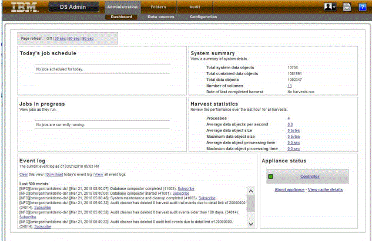
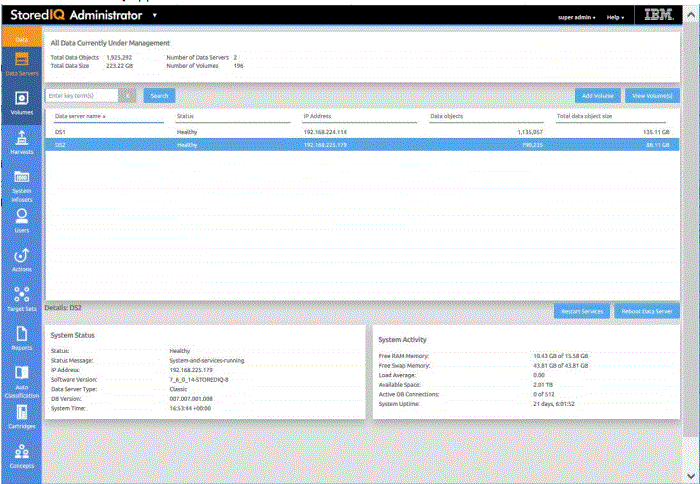
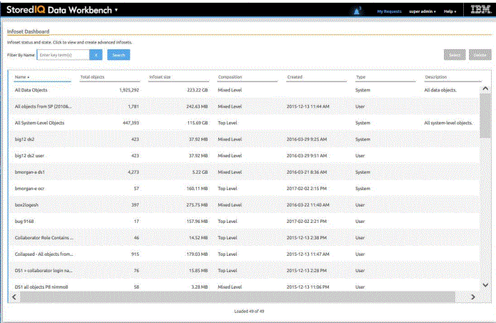
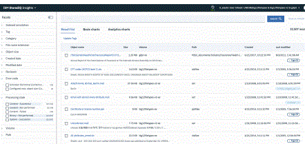
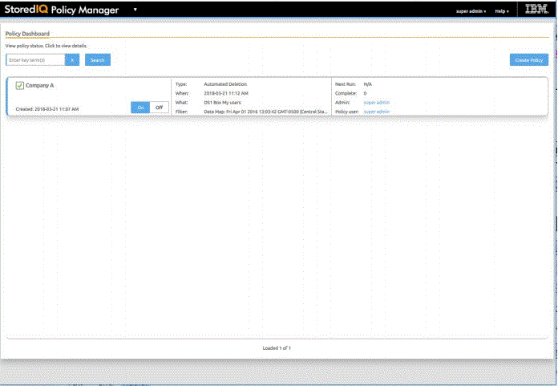

IBM StoredIQ Components
The IBM StoredIQ solution consists of these components: the application stack, the gateway, the dataserver, and optionally the Elasticsearch cluster.
Solution components
IBM StoredIQ provides three solution components: the gateway, data servers, and application stack (AppStack).
Gateway
The gateway communicates between the data servers and the application stack. The application stack polls the gateway for information about the data on the data servers. The data servers push the information to the gateway.
Data servers
A data server obtains the data from supported data sources and indexes it. By indexing this data, you gain information about unstructured data such as, file size, file data types, file owners.
The data server pushes the information about volumes and indexes to the gateway so it can be communicated to the application stack. Multiple data servers feed into a single gateway
Data servers can be categorized in two types: DataServer - Classic and DataServer - Distributed. A data server of the type DataServer - Classic uses the embedded PostgreSQL database for storing the index. With a data server of the type DataServer - Distributed, the index is stored in an Elasticsearch cluster. Data servers of this type also provide better performance in search queries. They can manage much larger amounts of data than data servers of the type DataServer - Classic, thus making the IBM StoredIQ deployments more scalable.
You can have both types of data servers in your IBM StoredIQ deployment.
In addition to completing standard administrative tasks, administrators can deploy the IBM StoredIQ Desktop Data Collector and index desktops from the data server.
Application stack
The application stack provides the user interface for the IBM StoredIQ Administrator, IBM StoredIQ Data Workbench, IBM StoredIQ Insights, and the IBM StoredIQ Policy Manager products.
The synchronization feature for integration with a governance catalog is also part of the application stack.
Elasticsearch cluster
The Elasticsearch cluster attached to a data server of the type DataServer - Distributed provides a single data store for all metadata and content of harvested objects. Indexed data is distributed automatically across the nodes in the cluster. Indexing and queries are load-balanced across all nodes. Nodes can be added dynamically without downtime and the indexing process can use these newly added nodes without further setup.
Application of IBM Stored IQ
IBM StoredIQ provides interface applications that help ful³ll its solution goals.
IBM StoredIQ Data Server
IBM StoredIQ Data Server user interface provides access to data server functionality. It allows administrators to view the dashboard and see the status of the jobs and system details. Administrators can manage information about servers and conduct various configurations on the system and application settings.
IBM StoredIQ Administrator
IBM StoredIQ Administrator helps you manage global assets common to the distributed infrastructure behind IBM StoredIQ applications.
IBM StoredIQ Administrator provides at-a-glance understanding of the different issues that can crop up in the IBM StoredIQ environment. These views are unique to the IBM StoredIQ Administrator application as they provide an overview of how the system is running. They allow access to various pieces of information that are being shared across applications or allow for the management of resources in a centralized manner.
The administrator is the person responsible for managing the IBM StoredIQ. This individual has strong understanding of data sources, indexes, data servers, jobs, infosets, and actions. This list provides an overview as to how IBM StoredIQ Administrator works:
- Viewing data servers and volumes: Using IBM StoredIQ Administrator, the Administrator can identify what data servers are deployed, their location, what data is being managed, and the status of each data server in the system. Volume management is a central component of IBM StoredIQ. IBM StoredIQ Administrator also allows the Administrator to see what volumes are currently under management, which data server is responsible for that volume, the state of the volume after indexing, and the amount and size of information that is contained by each volume. Administrators can also add volumes to and delete volumes from data servers through this interface. If IBM StoredIQ is con³gured for integration with Information Governance Catalog, the Administrator can also manage which volumes are published to the governance catalog.
- Scheduling harvests: Harvesting, which can also be referred to as indexing, is the process or task by which IBM StoredIQ examines and classifies data in your network. Using IBM StoredIQ Administrator, harvests can be scheduled, edited, and deleted.
- Creating system infosets: System infosets that use only speci³c indexed volumes can be created and managed within IBM StoredIQ Administrator. Although infosets are a core component of IBM StoredIQ Data Workbench, system infosets are created as a shortcut for users in IBM StoredIQ Administrator.
- Managing users: The user management area allows administrators to create users and manage users' access to the various IBM StoredIQ applications
- Configuring and managing actions: An action is any process that is taken upon the data that is represented by the indexes. Actions are run by data servers on indexed data objects. Any errors or warnings that are generated as a result of an action are recorded as exceptions in IBM StoredIQ Data Workbench.
- Note: Actions can be created within IBM StoredIQ Administrator and then made available to other IBM StoredIQ applications such as IBM StoredIQ Data Workbench.
- Managing target sets:Provides an interface that allows the user to set the wanted targets for speci³c actions that require a destination volume for their actions.
- Reports:IBM StoredIQ Administrator provides a number of built-in reports, such as summaries of data objects in the system, storage use, and the number of identical documents in the system. You can create custom reports, including Query Analysis Reports for e-discovery purposes, and automatically email report notifications to administrators and other interested parties.
- Auto-Classification: Automated document categorization, what IBM StoredIQ refers to as auto classification models, integrates the IBM® Content classification's classification model into the IBM StoredIQ infoset-generation process. Data Experts can use IBM Content classification to train a classification model, which is then registered with IBM StoredIQ Administrator. The registered classification model can be applied to an existing infoset in IBM StoredIQ Data Workbench to generate new metadata for the objects in the infoset. Metadata can be used in rule-based ³lters to create new infosets
- Cartridges:Cartridges are compressed ³les that contain analysis logic. When you add a cartridge to IBM StoredIQ AppStack, it can detect new data in documents during indexing and make these new insights searchable. For example, a sensitive pattern cartridge can enable IBM StoredIQ to detect passport numbers, phone numbers, and other IDs. To apply the analysis logic contained in the cartridge, you must run a Step-up Analytics action that uses the cartridge on an infoset. IBM StoredIQ examines all documents in the infoset, applies the analytics, and then stores the analysis results in the IBM StoredIQ index.
- Managing concepts: Provides the ability to relate business concepts to indexed data.
- Managing Mule scripts:Helps you to create Mule scripts and upload script packages. These Mule scripts are used by IBM StoredIQ Policy Manager to create policies using the automation workflow.
- DataServer - Classic:Data servers can be categorized in two types: DataServer - Classic and DataServer - Distributed. DataServer - Classic refers to the regular data servers. It uses either the current PostgreSQL or Lucene index as an index.
- DataServer - Distributed: The distributed data server uses an Elasticsearch cluster instead of an embedded Postgres database. It increases the scalability and flexibility of the IBM StoredIQ deployment in a way that it can manage much larger amounts of data. Without adding more data servers, data that is managed by the IBM StoredIQ deployment can be increased by adding new nodes to the Elasticsearch cluster. Search queries perform better on DataServer - Distributed.
- Connector API SDK: A connector is a software component of IBM StoredIQ that is used to connect to a data source such as a network file system and access its data. Using IBM StoredIQ Connector API SDK, developers of other companies can develop connectors to new data sources outside the IBM StoredIQ development environment. These connectors can be integrated with a live IBM StoredIQ application to index, search, manage, and analyze data on the data source.
IBM StoredIQ Data Workbench
Big data is a pervasive problem, not a one-time occurrence. It is easy for most companies to realize that big data is problematic, but it is hard to identify what problems they have. Big data is all about the unknown, but the unknown cannot be off limits. IBM StoredIQ Data Workbench can help you learn about your data, make educated decisions with your most valuable asset, and turn your company's most dangerous risk into its most valuable asset.
IBM StoredIQ Data Workbench is a data visualization and management tool that helps you to actively manage your company's data. It helps you to determine how much data you have, where it is, who owns it, and when it was last used. When you have a clear understanding of your company's data landscape, IBM StoredIQ Data Workbench helps you take control of data. You can make informed decisions about your data and act on that knowledge by copying, copying to retention, or conducting a discovery export. Here are just some examples of how you can use IBM StoredIQ Data Workbench.
- You need to find all company email that is sent from or received by Eileen Sideways (esideways@thecompany.com). You can use IBM StoredIQ Data Workbench to ³nd all email and then copy that data to a prede³ned repository. You can also use IBM StoredIQ Data Workbench to ³nd all of the esideways@thecompany.com email that occurred between speci³c dates and then make that email available for review.
- As an administrator, you want to rid your networks and storage of unused data. You can use IBM StoredIQ Data Workbench to ³nd all ³les that were not modi³ed in more than ³ve years.
- You want to ³nd all image ³les that are created in 2007. Not only can IBM StoredIQ Data Workbench ³nd all image ³les that were created in 2007. It also shows how much space they occupy on your network.
- A user needs to understand how data about Windows is being retained. Using IBM StoredIQ Data Workbench, you can provide that user with a visual overview of the number of objects that are retained and a breakdown of files per data source. Additionally, you can apply overlays to show the user if those files contain forbidden information such as credit-card numbers or Social Security numbers.
- If IBM StoredIQ is con³gured accordingly, you can select the infosets and filters that are published to the governance catalog for uni³ed governance of structured and unstructured information. When integrating with Information Governance Catalog, you can also analyze and classify the data governed by IBM StoredIQ based on the data classes that are synchronized from the governance catalog.
IBM StoredIQ Insights
IBM StoredIQ Insights provides dynamic and interactive ³ltering for your data with easy access to all metadata and instant plain-text preview of document content for full-text indexed volumes.
Faceted search lets you drill down to re³ne your search results as needed. In addition, you can apply any valid IBM StoredIQ filter query. Tags let you categorize the data for easier management. Visual representations of search results help you gain further insights into your data. Several chart types let you look at and explore data from different perspectives, thus helping you identify patterns and relationships very quickly.
With IBM StoredIQ Insights, you can search data that is managed and indexed by a data server of the type DataServer - Distributed. In mixed deployments that have classic and distributed data servers, only the content from distributed data servers will be searchable.
IBM StoredIQ Policy Manager
IBM StoredIQ Policy Manager allows users to run mature policies and processes at scale across a wider range of data.
The users can define and run systemwide policies, focusing on the execution of the process rather than understanding or reviewing affected data objects. Additionally, with reports of IBM StoredIQ Policy Manager, you can record what actions were conducted, when they were conducted, and what data was affected by the policy's execution.
IBM StoredIQ Desktop Data Collector
IBM StoredIQ Desktop Data Collector (also referred to as desktop client indexes desktops as volumes. The volumes appear in IBM StoredIQ Data Server and in IBM StoredIQ Administrator, where they can be used like any other data source.
The data server maintains an index using the information sent by the desktop client. After indexing, desktops - even offline or unreachable ones - can be viewed, searched, or targeted for later policy action.